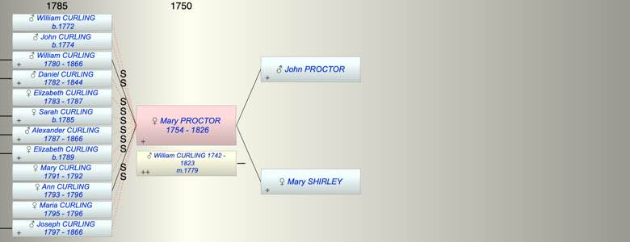

| [Index] |
| Mary PROCTOR (1754 - 1826) |
|  |
| b. abt 1754 at Gloucestershire |
| m. 04 Aug 1779 William CURLING (1742 - 1823) at Moreton in Marsh, Glos |
| d. 1826 aged 72 |
| Parents: |
| John PROCTOR |
| Mary SHIRLEY |
| Children (2): |
| William CURLING (1780 - 1866) |
| Ann CURLING (1793 - 1796) |
| Grandchildren (6): |
| James CURLING (1808 - 1858), Jane CURLING (1810 - ), Mary CURLING (1812 - 1876), Sarah CURLING (1814 - 1897), Martha CURLING (1816 - 1898), John CURLING (1821 - 1863) |
| Events in Mary PROCTOR (1754 - 1826)'s life | |||||
| Date | Age | Event | Place | Notes | Src |
| abt 1754 | Mary PROCTOR was born | Gloucestershire | Note 1 | ||
| 04 Aug 1779 | 25 | Married William CURLING (aged 37) | Moreton in Marsh, Glos | Note 2 | |
| 01 Oct 1780 | 26 | Birth of son William CURLING | City of London | Note 3 | |
| 1787 | 33 | Death of step daughter Elizabeth CURLING (aged 4) | City of London | Note 4 | |
| 1792 | 38 | Death of step daughter Mary Ann CURLING (aged 1) | City of London | Note 5 | |
| 13 Apr 1793 | 39 | Birth of daughter Ann CURLING | City of London | Note 6 | |
| 1796 | 42 | Death of daughter Ann CURLING (aged 3) | City of London | Note 7 | |
| 1796 | 42 | Death of step daughter Maria CURLING (aged 1) | City of London | Note 8 | |
| 1823 | 69 | Death of husband William CURLING (aged 81) | |||
| 1826 | 72 | Mary PROCTOR died | Note 9 | ||
| Created on a Mac™ using iFamily for Mac™ on 8 Oct 2023 |